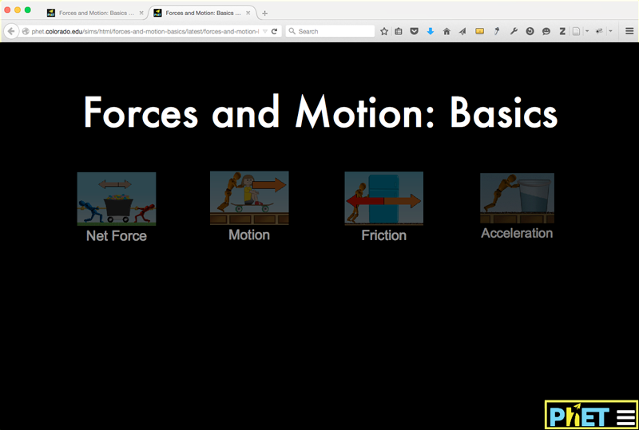
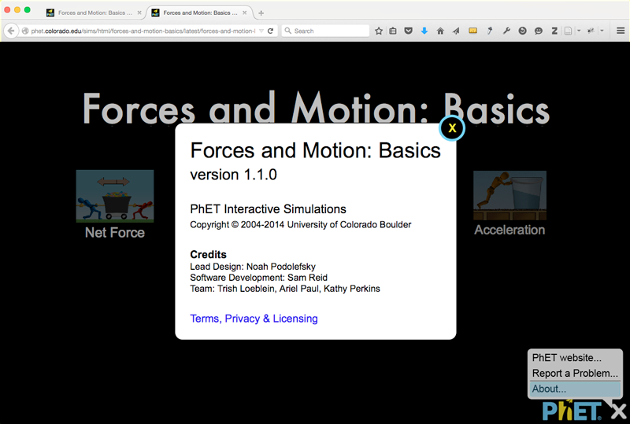
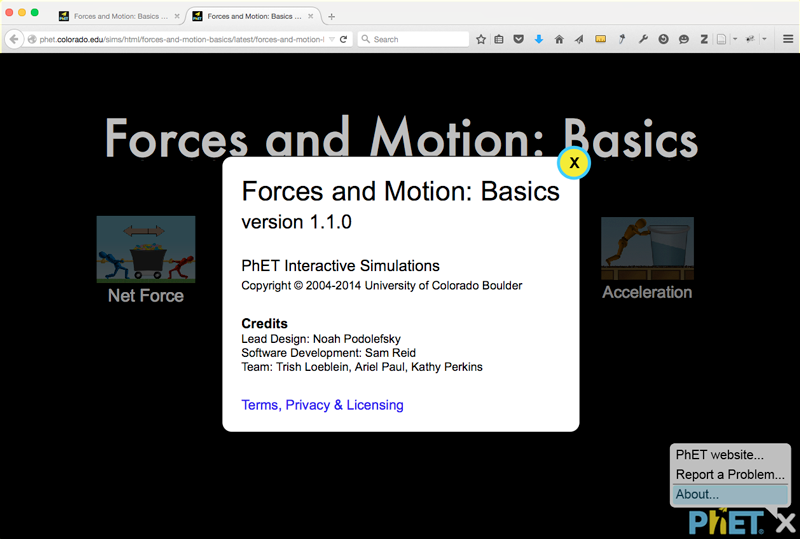

Pressing Enter key adds the active style of a thicker yellow border (not shown). Tab key moves focus to next sim screen: Motion.
On Page Load, first screen link, Net Force, has keyboard focus.
Tab to Motion
Pressing Enter key adds the active style (not shown). Tab key moves focus to next sim screen: Friction.
Keyboard focus is on Motion screen link.
Tab to Friction
Pressing Enter key adds the active style (not shown). Tab key moves focus to next sim screen: Acceleration.
Keyboard focus is on Friction screen link.
Tab to Acceleration
Pressing Enter key adds the active style (not shown). Tab key moves focus to next focusable item: PhET Menu.
Keyboard focus is on Acceleration screen link.
Tab to PhET Menu
Pressing Enter key thickens the yellow border (not shown) and activates the bubble popup menu.
Keyboard focus is on the PhET menu link.

PhET Menu
When the PhET menu is popped up, the hamburger icon changes to an X indicating that it can be closed by selecting the PhET menu link again. The ESC key and clicking away also close the PhET menu popup and return focus to the PhET menu link.
Keyboard focus is on first item in the PhET menu. Page content is in modal view (i.e. behind a dark gradient).
Tab to item 2
Pressing enter activates item 2 (not shown).
Keyboard focus moves to menu item 2.
Tab to item 3
Pressing enter activates item 3 (shown on next slide).
Keyboard focus moves is on menu item 3.
Enter activates item 3
Pressing enter activates item 3 link, pops up the About Page (next screen) and keyboard focus goes to the content of the modal.
Menu item 3 link with a border indicating the active style.
About Page
On pressing Enter, user focus moves to the start of the modal content. A Close button is added to top right corner of modal. Pressing Tab would move focus between the links in the modal.
About page is popped up. An explicit Close button is added to top right corner of modal. The PhET menu is behind modal gradient.

Tab to Close
Pressing Tab moves focus to Terms, Privacy & Licensing link and then to the Close button.
Colour changes when Close button has focus.

Close button active
Enter key while close has focus closes the modal. ESC key and clicking away should also close the modal.
Colour changes on Close button is activate.
PhET Menu item 3
Closing the About page moves focus back to item 3.
Menu with the third item in focus. Modal gradient is gone.
Back to PhET Menu
Pressing X, ESC or clicking away brings user Back to the PhET Menu. Tab for next focusable item: Net Forces screen.
PhET Menu with keyboard focus.
Tab to Net Force
Tab from the PhET menu moves focus to next focusable item: Net Force.
Home screen with Net Forces focused.
Shift-Tab from PhET Menu
Shift-Tab when the PhET menu had focus moves user focus to the last screen: Acceleration.